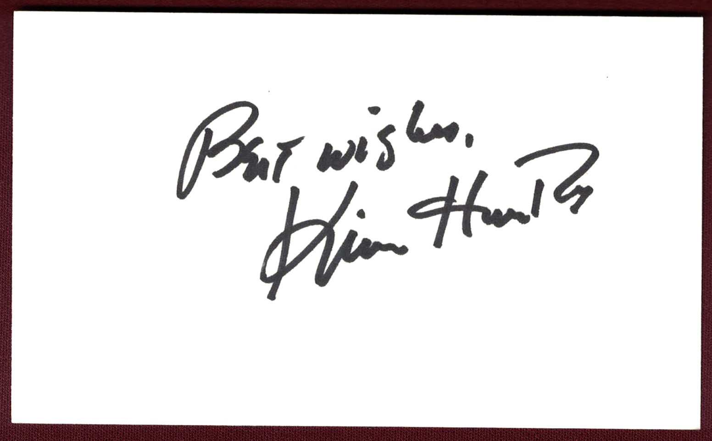

Product No. HEA-0274
$100
Shipping: $8.95
Description
Signed 3x5 index card. Not inscribed.
Full Description
Kim Hunter (Deceased) Kim Hunter was an American actress best known for her acclaimed stage and film career and for portraying Stella Kowalski in A Streetcar Named Desire. She was born on November 12, 1922, in Detroit, Michigan. Hunter originated the role of Stella on Broadway opposite Marlon Brando and later reprised it in the 1951 film adaptation. Her performance earned her the Academy Award for Best Supporting Actress and a Golden Globe Award. She also became familiar to science-fiction audiences for playing the sympathetic chimpanzee scientist Zira in Planet of the Apes and its sequels Beneath the Planet of the Apes and Escape from the Planet of the Apes. During the 1950s, Hunter’s career was affected by the Hollywood blacklist after she was identified as having alleged left-wing associations. She later resumed steady work in film, television, and theater. Her television credits included appearances on programs such as The Edge of Night, Murder, She Wrote, and numerous dramatic anthology series. Kim Hunter died on September 11, 2002, at age 79.
Condition
Excellent condition